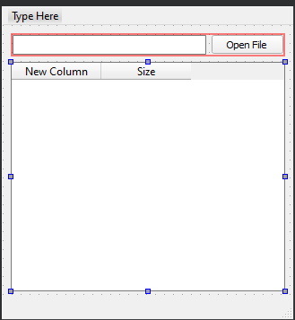
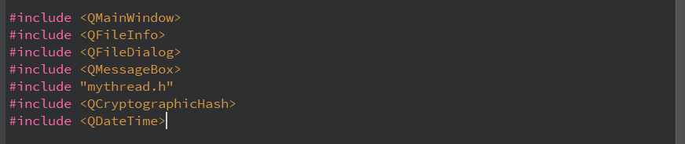
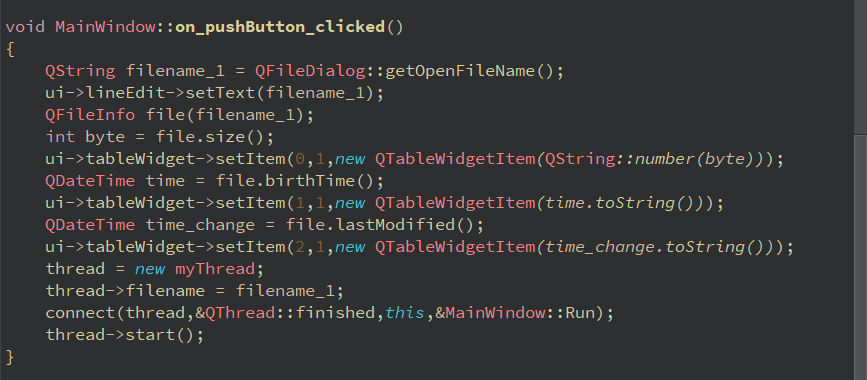
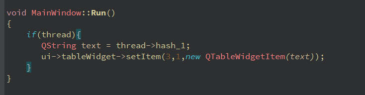
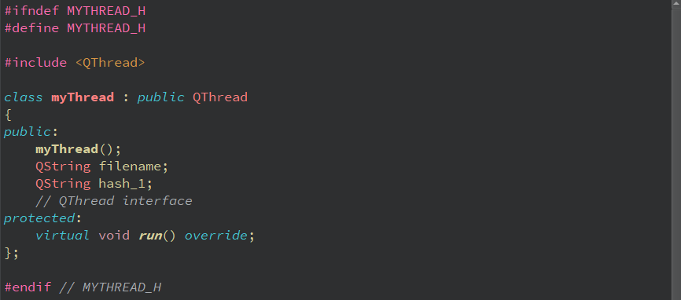
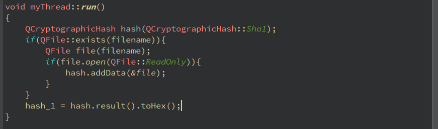

Phát triển một chương trình lấy các thuộc tính cơ bản của một tệp. Đặt các tiện ích QLineEdit, ОPushButton, QTableWidget vào biểu mẫu. Khi nhấn Open File, hãy sử dụng hộp thoại chọn tệp tiêu chuẩn để hỏi người dùng về tên tệp sẽ mở. Trong LineEdit, hiển thị tên của tệp đã chọn. Trong QTableWidget, hiển thị các thuộc tính tệp sau: kích thước, ngày tạo, ngày sửa đổi lần cuối, hàm băm SHA1 của tệp. Tính toán băm tệp trong một luồng riêng biệt.
Ở chế độ thiết kế:
Hãy xem video hướng dẫn sau:
Thư viện yêu cầu:
Code mở file:
Hàm Run():
Bạn cần tạo thêm một class có tên là myThread như sau:
Tính toán SHA1:
Chúc các bạn thành công.Có thắc mác gì thì có thể gửi Email hoặc Facebook cho mình.